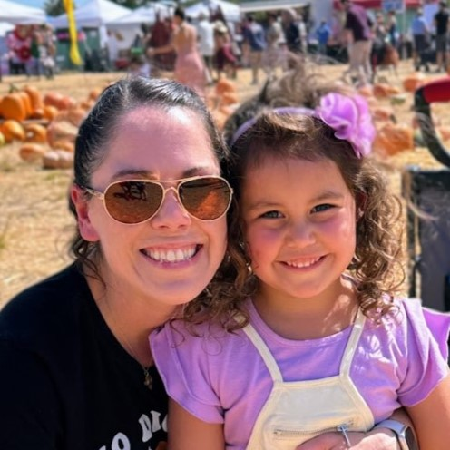

About MeHi there, I'm Angela! When my daughter was diagnosed with both egg and dairy allergies at 6 months old, we knew our family would have to make diet and lifestyle changes. After having a difficult time finding alternatives for my daughter's first birthday cake, I decided to try my hand at baking. I am always on the lookout for new allergen-friendly recipes and have loved learning to decorate these special treats. Food allergies are on the rise, and my hope is that sharing these ideas will inspire other families to work with ingredients in new ways so that everyone is included on special occasions. |
